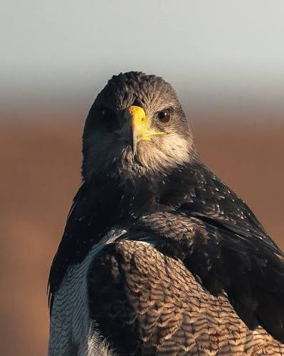

Ruta Nacional 22, Km 1200 — Valle del Comahue, Río Negro
Martes a Domingo, 10:00 a 18:00
¿Quiénes somos?
El Parque Nacional del Comahue fue fundado con el objetivo de preservar la abundante biodiversidad de nuestra región. Llevamos más
Este es un espacio que une la conservación con el aprendizaje y la educación.
Nuestros Animales
Antes de visitar, conozca un poco de las diversias especies que encontrará en nuestro parque.
Nuestras fichas técnicas completas le brindarán todo el conocimiento necesario para aprovechar al máximo su visita.

Se pide al visitante que:
- No entre con animales domésticos o silvestres.
- No entre con instrumentos musicales, silbatos u otras fuentes de ruído que puedan causar mal-estar a otros visitantes o a los animales.
- No entre con bicicleta,triciclo, patineta, scooter o cualquier otro vehículo.
- Sea consciente con sus resíduos y que ayude a cuidar el ambiente.
- No arroje colillas de cigarrillos, haga fuegos o cualquier otra actividad que presente riesgo de incendio.